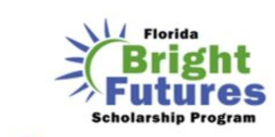

The gate is always open and admission is always free. It stays that way because people give what they can — time, talent, or a few dollars. Here's how to be one of them.
A one-time gift, any amount. The fastest way to help keep the park free.
Give once →A lasting commitment — plus reciprocal entry to 380+ gardens nationwide.
See the levels →Pull a weed, run an event, lead a tour. There's a place for every interest.
Find your fit →Shoot observations in the park — or identify, annotate, and curate the collection from anywhere on Earth.
Two ways in →You walk in — no gate, no ticket, any day you like. We pick up the trash. We pull the weeds. We plant new things and water them through a Florida summer. We don't just grow the collection, we document it — our database geeks and web geeks have put incredibly detailed information on every plant and animal here online, free, for anyone. We build self-guided tours. We make and maintain the QR signs you scan on the trail. We evaluate new plants worth bringing in. We host events and ready the park for classes. We do all of it on ten acres that belong to the whole community.
All of that takes money — and we promise we run lean. We're not the big famous gardens down the road, and we don't pretend to be. We're the scrappy ones: we out-hustle, we out-innovate, and we turn your dollars around fast — straight into the park, in direct response to what we hear from you. No bloat. No middlemen. Just a free park that keeps getting better because people like you chip in.
A one-time gift of any size, right now, through PayPal. Every dollar goes straight into keeping the park free and growing. Tax-deductible under current IRS code.
Donate Today →Become a member. A standing commitment that keeps the trash picked up, the plants in the ground, and the geeks geeking — all year long. Every level adds reciprocal entry to 380+ gardens nationwide.
See membership levels →As a 501(c)(3) nonprofit receiving no federal, state, or local funding, we rely on members to sustain these ten acres. Every level is tax-deductible and now includes a Reciprocal Admissions Program card — entry to 380+ botanical gardens nationwide.
For supporters and businesses who want to make a lasting mark on the park, with recognition and venue benefits.
Every annual membership includes the Reciprocal Admissions Program — free or discounted entry to more than 380 botanical parks and gardens across the country. See the full list at the American Horticultural Society →
A membership makes a thoughtful gift for the garden lover in your life — a full year of the park, the discounts, the events, and the reciprocal gardens. Choose any level above, or call us and we'll help you set it up.
The people who make this park what it is — loading…
"Many hands make light work."
Some volunteers come every week. Some come once a month. Some just show up when they feel like it. All of it counts. All of it matters. The gate is always open.
📄 Volunteer Application →Many volunteers come weekly. Some come whenever time allows. Some never touch a plant — and that's completely fine. Whatever your interest, energy, or skill set, we'll find your rhythm.
Planting, propagating, weeding, trimming, yard cleanup. The hands-on core of what keeps this place beautiful. No experience needed — just willingness.
Help run plant sales, holiday events, fundraisers, art exhibits, cornhole tournaments, family fun nights, and more. If you like people more than plants, this is your lane.
Lead self-guided tour development, assist with classes and workshops, support field trips and family programs. If you love to teach, share, or interpret — this park has an audience.
Light carpentry, painting, pressure washing, repairs, filing, data entry, graphic design, thank-you cards. The unglamorous stuff that keeps everything running.
Photography, social media, writing, baking for events, representing the park at the Farmer's Market or County Fair. If you have a skill we haven't listed, we probably need it.

High school students earn Florida Bright Futures scholarship hours through weekly sessions at Palma Sola. They plant, maintain, observe, and learn — and many leave with something harder to measure: a working relationship with the natural world.
Students have planted the native Scorpion Tail along pond shores, maintained the Snake Plant patch near the front gate, learned to distinguish Canna from Heliconia in the office bed, and submitted their own iNaturalist observations.
The program also runs at the Patricia & Dr. Carroll Geraldson Community Garden, a UF/IFAS Extension project in Palmetto.
Ask About the Program →Any high school student pursuing Florida Bright Futures scholarship hours. No prior plant knowledge required.
Plant identification, iNaturalist observation, ecological relationships, garden maintenance, and how to read a living landscape.
"Now I see snake plants everywhere I go." — that's the Baader-Meinhof effect. Once you learn one plant, you can't stop seeing it.
Snapping a photo is the front door. Walk through it and there's a whole world behind it — and a lot of it you can do from your couch, anywhere on Earth. Pick the way in that sounds like you.
See something growing, blooming, crawling, or buzzing? Photograph it. That's the whole job — you've just added to the park's permanent scientific record. The community helps confirm what it is, so you genuinely can't get it wrong. Do it on any walk, or with our Wednesday crew.
Start observing →Like falling down a good rabbit hole? This is where it gets addictive. Confirm what others have found. Tag a plant as flowering or fruiting. Hunt the gaps in our catalog. You learn one species at a time, trade wondrous facts with people who love this as much as you do, and watch a living collection come into focus. You don't have to be in Florida — or even the U.S. Curiosity and a browser is the whole list of requirements.
Join the crew →Identifiers, annotators, catalog-curators, gap-hunters — a standing group that processes the park's data and goes down the rabbit hole together. A newsletter and a dedicated inbox are coming. Want in early? Reach out and we'll loop you in →
Give, join, volunteer, or observe — every bit keeps the gates open and the gardens growing. Questions? Just ask.